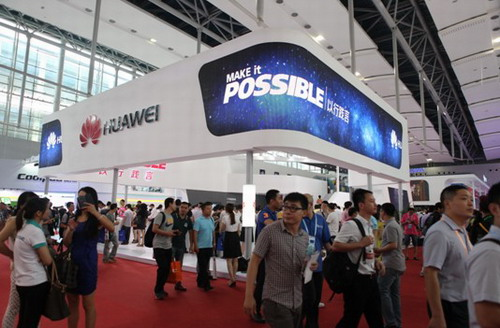
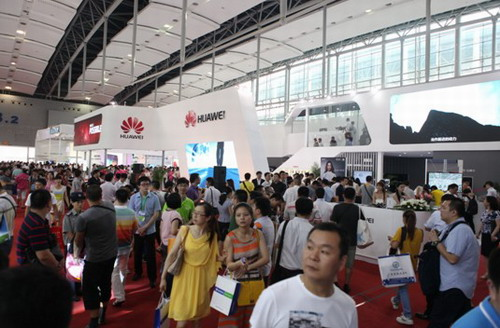

6月21日，华为终端高调亮相2013年中国电信天翼3G互联网手机交易会。华为终端展区面积接近500平米，是本届天翼展上最大的终端厂家展区之一。整个展区以“MAKE it POSSIBLE”(以行践言)为主题，270度环型彩幕结构高端、简洁、大气且极富科技感和时尚感。华为终端展区紧邻中国电信和高通展区，占据主通道最显耀的位置，吸引了众多入场参观者的眼球。同时亮相的高端旗舰华为Ascend P6继伦敦全球发布之后惊艳亮相，摘得全球最薄CDMA智能手机的桂冠，成为全场焦点。
本届展会上华为终端展出了旗下手机产品线、家庭融合终端产品线和移动宽带产品线的当下主推产品：既有人气新品麦芒A199, 又有千元主力C8813Q，也还有高端明星机Ascend D2以及近日上市的Ascend P6。此外，家庭融合产品线的3G CDMA版7寸平板MediaPad 7 Vogue、家庭娱乐终端Media Q和移动宽带产品线的E5等精品机型也逐一亮相，同时华为ID设计、终端云、Emotion-UI、行业应用、LTE网络终端体验等更是全面而生动地展示了华为终端的核心能力。
据了解，华为终端智能手机2013年第一季度国内出货量达到810万台，成为国内智能手机销量的第一品牌。2013年上半年，华为终端除了继续在千元智能机市场夯实领导地位外，继续在中高端智能机市场发力。2013年1月，华为Ascend D2在美国CES展发布后，迅速在国内上市了Ascend D2电信版。紧接着在2013年4月，华为终端联合中国电信共同发布了年轻手机麦芒品牌并推出旗下首款手机麦芒A199。凭借着对年轻用户的深入洞察以及产品本身的鲜明个性，麦芒A199一上市就得到了广大年轻用户的喜爱。
华为终端有限公司中国地区部总裁王伟军在现场也表示,“华为终端是中国电信重要的战略合作伙伴之一。长期以来，华为终端通过与中国电信天翼品牌深度合作，共同打造一批体验好、品质高、性价比高的系列化精品机型，助力中国电信共同推动3G智能手机市场的普及和发展。”事实上的确如此，华为终端和中国电信天翼品牌的合作屡创佳绩，从2010年的C8500，到2011年的C8650，再到2012年的C8812，连续创造了一个又一个销售神话，极大的推动了千元智能机的普及，同时也奠定了华为终端与中国电信在千元智能机市场的深厚合作基础。而随着今年华为终端和中国电信天翼公司联合推出的年轻手机品牌“麦芒”的发布，就更加体现了华为终端和中国电信在战略、产品、渠道和品牌等方面的合作进一步升级。
除了展出3G精品外，作为在4G领域领先国际水平的华为来说，这次也展示了全系列LTE终端，包括LTE 手机、LTE 平板、LTE 数据卡和LTE 网关。记者现场了解到，华为还为本届展会独家提供了LTE网络服务。华为在通信领域有着20多年的积累，在端管云方面的独有优势将继续助力华为终端领跑4G时代。
华为终端坚持“以行践言”的品牌理念，坚持精品战略，以消费者体验为中心，不断优化产品结构和拓展销售渠道，赢得市场和口碑。据了解，华为终端从2003年成立至今，今年正好走过了十年的历程。在这十年中华为终端已成长为全球排名靠前的智能终端品牌，我们有理由相信，华为终端加大中高端产品的研发和市场投入力度，一定能收获新的成功。